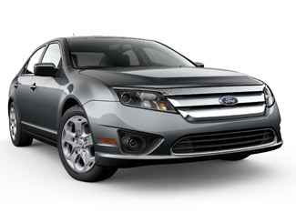

Ford has launched the 2010 Ford Fusion Hybrid and the 2010 Mercury Milan Hybrid, the company’s first hybrid mid-size sedans.
The 2010 Ford Fusion Hybrid achieves a best-in-class fuel economy of 41 miles per gallon (mpg) in the city and 36 mpg on the highway. Its price starts at $27,995, a premium of $8,000 above the base price of the non-hybrid version.
The well-equipped Mercury Milan Hybrid achieves the same fuel economy at a starting price of $31,300, a premium of roughly $9,400 above the base price of the non-hybrid model. However, customers who buy either hybrid by March 31 may qualify for a $3,400 tax credit. People who have ordered the car thus far seem to be well aware of that tax credit, as Ford reports that nearly 80 percent of the early retail orders have been for the hybrid versions.
Ford has also announced plans to introduce its first all-electric vehicle, and those expecting a rival to the Chevy Volt may be disappointed. In 2010, Ford will launch a battery-powered version of its new Transit Connect commercial vehicle, a delivery van aimed primarily at small businesses. Smith Electric Vehicles will work with Ford to produce the all-electric versions of the new vehicle. Those longing for an all-electric small car from Ford will have to wait another year, as Ford plans to launch such a vehicle in 2011. Ford will wait until 2012 for its first production of a plug-in hybrid vehicle.
|
 FORD MOTOR CO. The 2010 Ford Fusion Hybrid is one of the company's two new hybrid mid-size sedans. |
|
|